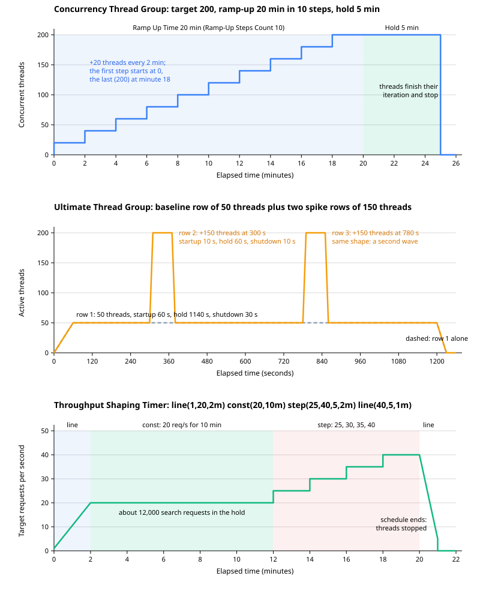

Custom Thread Groups & Load Shaping
|
This content was generated with the assistance of AI and should be verified against the official documentation before being relied on in production. |
This page was written against Apache JMeter 5.6.3, the latest release on 2026-10-14 (Java 8 or later, Java 17 or later recommended; the examples assume Java 17 or 21), and against two plugin packages from the community catalogue at jmeter-plugins.org, installed with the JMeter Plugins Manager 2.0:
-
Custom Thread Groups, plugin id
jpgc-casutg, version 3.1.1: the Concurrency, Ultimate, Stepping, Arrivals and Free-Form Arrivals Thread Groups. -
Throughput Shaping Timer, plugin id
jpgc-tst, version 2.6, which also provides the__tstFeedbackfunction.
JMeter 6.0 is not released. Its planned changes (per xdocs/changes.xml on the apache/jmeter master branch) require
Java 17 or later, with Java 21 recommended, and none of them names these plugins; whether jpgc-casutg 3.1.1 and
jpgc-tst 2.6 load unchanged in 6.0 is not stated anywhere official, so re-test plans that use them after upgrading.
jmeter-plugins.org is an independent community project, not part of Apache JMeter. Its wiki pages describe these
elements only briefly, so where the wiki is silent (field labels, JMX property names, how threads are started and
stopped) this page states what the plugin source code in the undera/jmeter-plugins repository does, and says so.
The core Thread Group has one shape: a linear ramp-up to a fixed number of threads, then a hold. The Open Model Thread Group, added in JMeter 5.5, schedules arrivals instead of threads. Before either existed, testers used plugins to draw other shapes: staircases to find the point where a system saturates, sudden spikes, waves, and a fixed number of requests per second regardless of response time. Those plugins are still maintained and still widely used, and this page covers them in full: what each element does, every field, the properties that let one plan run several profiles from the command line, the cost on the load generator, and how each compares with the core elements. It ends with the Bookshelf stress (steps to saturation) and spike profiles and a comparison table.
The core concepts are on earlier pages: the Thread Group fields and the ramp-up maths on
Thread Groups: Concurrent Users & Ramp-up, the
closed and open workload models, the Open Model Thread Group and the core throughput timers on
Open Model & Throughput Control, timer scoping and the
Synchronizing Timer on Timers & Think Time, and __P on
Properties, Variables & Functions. Installing plugins is
covered on Plugins & Plugins Manager.
Installing the two plugins
In the GUI, open Options → Plugins Manager, select Custom Thread Groups and Throughput Shaping Timer on the
Available Plugins tab and click Apply Changes and Restart JMeter. For a build server or a container image, use the
command-line installer described on the Plugins Manager wiki (it needs cmdrunner in lib/, version 2.3 for Plugins
Manager 2.0 although the wiki still names cmdrunner-2.0.jar, and the PluginsManagerCMD script in bin/, which
PluginManagerCMDInstaller creates):
bin/PluginsManagerCMD.sh install jpgc-casutg=3.1.1,jpgc-tst=2.6
bin/PluginsManagerCMD.sh statusstatus prints the installed plugin ids with their versions, a list such as
[jpgc-casutg=3.1.1, jpgc-tst=2.6, jmeter-core=5.6.3, ...]. A plan that already uses the elements can also install
exactly what it needs with install-for-jmx:
bin/PluginsManagerCMD.sh install-for-jmx bookshelf-load.jmxAfter a restart the thread groups appear under Add → Threads (Users) with a prefix that marks their origin: bzm - Concurrency Thread Group, bzm - Arrivals Thread Group and bzm - Free-Form Arrivals Thread Group (contributed by BlazeMeter), and jp@gc - Ultimate Thread Group and jp@gc - Stepping Thread Group. The timer appears under Add → Timer → jp@gc - Throughput Shaping Timer. Every load generator that runs the plan needs the same plugins, including every remote server in a distributed run.
Two families of custom thread groups
The five thread groups in jpgc-casutg come from two code bases, and the difference matters more than the names
suggest.
| "jp@gc" schedulers: Ultimate, Stepping | "bzm" dynamic groups: Concurrency, Arrivals, Free-Form Arrivals | |
|---|---|---|
How threads are created |
All threads of the group are created when the test starts, each with its own start and end time, exactly like the core Thread Group with a scheduler. Threads sleep until their start time. |
Threads are created on demand by a background thread starter while the test runs. The wiki says of the Concurrency Thread Group that it "won’t create all the threads upfront, so extra memory won’t be used". |
How threads end |
At their scheduled end time. As in the core Thread Group, the end time is checked between samples, so an iteration can be cut after any sampler. |
At the end of an iteration, when the schedule is over or the target has dropped. The wiki calls the Concurrency Thread Group a replacement for Stepping because "it allows threads to finish their job gracefully". |
Loop |
An implicit Loop Controller set to loop forever; the thread runs until its end time. |
An implicit Virtual User Controller ( |
Run-time changes |
The schedule is fixed when the group starts. |
The fields are re-read during the run (every 20 ms by default), so a field that reads a JMeter property follows that property if it changes. |
Preview |
A chart of the expected number of active threads. |
A chart that redraws as you type: concurrency for the Concurrency Thread Group, arrivals per time unit for the two Arrivals groups. |
The "how threads are created and end" rows describe the 3.1.1 source code (AbstractSimpleThreadGroup for the jp@gc
groups, AbstractDynamicThreadGroup, the thread starters and VirtualUserController for the bzm groups); the quoted
sentences are from the Concurrency Thread Group wiki page.
Concurrency Thread Group
The Concurrency Thread Group is the plugin most plans use today. Its wiki describes it as offering a "simplified approach for configuring threads schedule", intended to maintain a level of concurrency: it starts additional threads during the run whenever fewer than the target are running in parallel. It is a closed-model group like the core Thread Group (each thread waits for its response before the next request), but with steps, a separate hold time and graceful thread endings. Menu path: right-click the Test Plan, Add → Threads (Users) → bzm - Concurrency Thread Group.
Fields
The panel has the shared Action to be taken after a Sampler error section at the top (the same five choices as the
core Thread Group, stored in ThreadGroup.on_sample_error), then the load fields, the preview chart and the additional
fields. Labels and property names below are those of the 3.1.1 source; the time labels show (sec) or (min)
according to the Time Unit.
| GUI field | JMX property | Meaning |
|---|---|---|
Target Concurrency |
|
The number of threads to keep running at the end of the ramp-up and during the hold. It is not multiplied by the time
unit. Accepts functions, for example |
Ramp Up Time (sec or min) |
|
Time to grow from 0 to the target. Empty or 0 means all threads start at once. |
Ramp-Up Steps Count |
|
Empty or 0: a linear ramp. A number n: the ramp is a staircase of n equal steps of target / n threads, each lasting ramp-up / n. |
Hold Target Rate Time (sec or min) |
|
How long to keep the target after the ramp-up has ended. The group’s total run time is ramp-up plus hold. |
Time Unit: minutes / seconds |
|
Unit of the two time fields. The 3.1.1 GUI pre-selects minutes for a new element; easy to miss when you meant seconds. |
Thread Iterations Limit |
|
Empty: unlimited. A number: each thread stops after that many iterations and is replaced by a new thread if the target still requires it. |
Same User On Each Iteration |
|
Same meaning as the core Thread Group option: selected (default), cookies, cache and connections carry over to the next
iteration. Added in |
Log Threads Status into File |
|
Optional file name. The group writes a record for every thread start and finish (the markers |
How the target is computed
The 3.1.1 thread starter computes the planned concurrency \(C(t)\) at elapsed time \(t\), with target \(N\), ramp-up \(R\), hold \(H\) and \(s\) steps:
Three consequences are worth knowing:
-
With steps, the first step starts immediately and the last step starts one step early. With \(N = 200\), \(R = 20\) minutes and \(s = 10\), the group runs 20 threads from minute 0, 40 from minute 2, and reaches 200 at minute 18, not at minute 20. Each level therefore lasts exactly \(R/s\), and the top level lasts \(R/s + H\).
-
The hold comes after the ramp-up. Unlike the core Thread Group, whose Duration includes the ramp-up, the Concurrency Thread Group runs for \(R + H\). The section’s standard load profile (50 threads, 60 s ramp-up, 10-minute hold) is Ramp Up Time 60 and Hold Target Rate Time 600 in seconds, where the core Thread Group needs a duration of 660.
-
Concurrency falls gracefully. When a thread finishes an iteration and there are more threads than \(C(t)\) requires (because the target was lowered or the hold is over), that thread ends. In-flight iterations are never cut. There is no ramp-down field: at \(R + H\) every thread ends at the end of its current iteration.
The starter checks every second (or as soon as a thread finishes) whether more threads are needed, and starts them. Threads that end because of an error action, an iteration limit or a failed login are therefore replaced, which is what "maintain the level of concurrency" means.
Configurable properties
The wiki lists three JMeter properties that tune all the bzm dynamic groups. Set them in user.properties or with -J.
| Property | Default | Meaning (from the wiki) |
|---|---|---|
|
20 (ms) |
For performance the group caches its field values this long. Set it negative if the values never change during the run; lower it to react faster, at a CPU cost. |
|
10 (ms) |
A sleep added after all threads stopped. |
|
0 |
Shifts the start of the ramp-up to avoid a CPU spike at the very beginning, when no thread exists yet. The wiki gives the default as 0 millis; the 3.1.1 starter subtracts the value from the elapsed time in seconds, so treat the unit as seconds. |
Fragment: the Bookshelf stress profile
The Bookshelf stress profile climbs from 20 to 200 threads in ten steps of two minutes and then holds for five
minutes, to find the concurrency at which the API saturates. The same journey as the load profile runs under the group
(log in, search, view a book, create a loan, view the loan, with 3 s of think time). The fields read properties so
that the same plan runs smaller steps in a test environment. Time Unit is set to seconds so that rampup keeps the
meaning it has in the rest of the section.
<com.blazemeter.jmeter.threads.concurrency.ConcurrencyThreadGroup
guiclass="com.blazemeter.jmeter.threads.concurrency.ConcurrencyThreadGroupGui"
testclass="com.blazemeter.jmeter.threads.concurrency.ConcurrencyThreadGroup" testname="Stress to saturation">
<elementProp name="ThreadGroup.main_controller" elementType="com.blazemeter.jmeter.control.VirtualUserController"/>
<stringProp name="ThreadGroup.on_sample_error">startnextloop</stringProp>
<stringProp name="TargetLevel">${__P(threads,200)}</stringProp>
<stringProp name="RampUp">${__P(rampup,1200)}</stringProp>
<stringProp name="Steps">${__P(steps,10)}</stringProp>
<stringProp name="Hold">${__P(hold,300)}</stringProp>
<stringProp name="LogFilename"></stringProp>
<stringProp name="Iterations"></stringProp>
<stringProp name="Unit">S</stringProp>
<boolProp name="same_user_on_next_iteration">false</boolProp>
</com.blazemeter.jmeter.threads.concurrency.ConcurrencyThreadGroup>
<hashTree>
<!-- CSV Data Set Config, Cookie Manager, the five-request journey and its think time go here -->
</hashTree>The element and property names are those written by the 3.1.1 GUI (the shape matches the demo.jmx shipped with the
Throughput Shaping Timer sources). Save the plan from the GUI to get the exact form your installation writes.
jmeter -n -t bookshelf-load.jmx -l stress.jtl -e -o report-stress \
-Jthreads=200 -Jrampup=1200 -Jsteps=10 -Jhold=300Worked numbers. One Bookshelf thread sends a request every \(R_t + Z = 0.2 + 3 = 3.2\) s, that is 0.3125 requests per second, as long as the response time stays at 0.2 s. If the server kept up, each step would add \(20 \times 0.3125 = 6.25\) requests per second: 6.25 at 20 threads, 31.25 at 100, 62.5 at 200. The test runs \(1200 + 300 = 1500\) s (25 minutes). Saturation shows as the step at which throughput stops rising while response times climb. Suppose the summariser reports about 30 requests per second at 120 threads and still about 30 at 140. Little’s Law, \(R_t = N/X - Z\), then gives \(120 / 30 - 3 = 1.0\) s and \(140 / 30 - 3 \approx 1.67\) s: the extra threads only queue. The capacity is about 30 requests per second, reached between 100 and 120 threads.
A representative summariser excerpt (the numbers depend on the system under test; each 30 s line falls inside one two-minute step):
summary + 188 in 00:00:30 = 6.3/s Avg: 201 Min: 38 Max: 655 Err: 0 (0.00%) Active: 20 Started: 20 Finished: 0
...
summary + 934 in 00:00:30 = 31.1/s Avg: 212 Min: 41 Max: 980 Err: 0 (0.00%) Active: 100 Started: 100 Finished: 0
...
summary + 903 in 00:00:30 = 30.1/s Avg: 998 Min: 44 Max: 4120 Err: 0 (0.00%) Active: 120 Started: 120 Finished: 0
...
summary + 897 in 00:00:30 = 29.9/s Avg: 1672 Min: 52 Max: 6904 Err: 3 (0.33%) Active: 140 Started: 140 Finished: 0In jmeter.log
the group’s thread starter logs Start supplying threads when it begins and Done supplying threads when the
schedule is over.
Ultimate Thread Group
The Ultimate Thread Group draws a load profile as a table of independent rows. Its wiki lists the features as an unlimited number of schedule records, a separate ramp-up time, shutdown time and flight time for each record, and a load preview graph. Each row describes one batch of threads; rows overlap freely, so the active-thread count at any moment is the sum of all rows active at that moment. That is what makes spikes and waves easy: a baseline row plus short rows on top of it. Menu path: Add → Threads (Users) → jp@gc - Ultimate Thread Group. Click Add Row to append a record; Copy Row and Delete Row work on the selected row.
Fields
The Threads Schedule table has five columns. All times are in seconds (whole numbers).
| Column | Meaning |
|---|---|
Start Threads Count |
The number of threads in this row. |
Initial Delay, sec |
Delay from the start of the thread group to the beginning of this row’s ramp-up. Every row counts from the group start; rows are not chained. |
Startup Time, sec |
The row’s ramp-up: its threads start evenly over this time. |
Hold Load For, sec |
How long all the row’s threads stay active once the startup time is over (the "flight time"). |
Shutdown Time |
The row’s ramp-down, in seconds: its threads reach their end times evenly over this time. |
The panel also has the shared Action to be taken after a Sampler error section. The table is stored as a
collectionProp named ultimatethreadgroupdata, one inner collectionProp per row holding five stringProp values in
column order. New rows are pre-filled with 100, 0, 30, 60 and 10 by the 3.1.1 GUI.
In 3.1.1 each thread of a row gets a start time of group start + initial delay + its share of the startup time, and an
end time of start of hold + hold + its share of the shutdown time. The row lasts initial delay + startup + hold
shutdown in total. A thread at its end time stops between two samples, so with a multi-request journey some iterations
are cut part way; leave a few seconds of shutdown time so that the cut is spread out rather than simultaneous.
The threads_schedule property
The wiki documents a way to replace the table from a JMeter property, in user.properties or with -J. The schedule is
a list of spawn directives:
spawn(threadsCount, initialDelay, startupTime, holdLoadFor, shutdownTime)The four durations accept case-insensitive suffixes s, m, h and d, combinable as in 1d11h23m6s. The wiki’s
example is threads_schedule=spawn(15,1s,1s,1s,1s) spawn(40,1s,3s,1s,2s).
When the property is set and not empty, the 3.1.1 source logs GUI threads profile will be ignored and uses the
property instead of the table. The property name is fixed, so it overrides every Ultimate Thread Group in the plan;
a plan with two Ultimate groups cannot give them different schedules this way. A directive that cannot be parsed is
skipped with a warning in the log, not reported as an error, so check the log line Setting threads profile from property threads_schedule: ... and the thread count of the start-up line (Starting thread group number 1 threads
350) after changing it.
Fragment: the Bookshelf spike profile
The Bookshelf spike profile keeps the 50-thread baseline for about 20 minutes and fires two spikes of 150 extra threads, each reaching 200 threads in 10 s and holding for a minute. Two spikes, eight minutes apart, show whether the API recovers between them (response times back to the baseline, connection pools drained, no growing error rate) and whether the second spike is worse than the first.
| Start Threads Count | Initial Delay, sec | Startup Time, sec | Hold Load For, sec | Shutdown Time | Active |
|---|---|---|---|---|---|
50 |
0 |
60 |
1140 |
30 |
0 to 60 s ramp, 50 threads from 60 to 1200 s, down to 0 at 1230 s |
150 |
300 |
10 |
60 |
10 |
+150 from 300 to 310 s, held to 370 s, gone at 380 s |
150 |
780 |
10 |
60 |
10 |
+150 from 780 to 790 s, held to 850 s, gone at 860 s |
<kg.apc.jmeter.threads.UltimateThreadGroup
guiclass="kg.apc.jmeter.threads.UltimateThreadGroupGui"
testclass="kg.apc.jmeter.threads.UltimateThreadGroup" testname="Spike">
<collectionProp name="ultimatethreadgroupdata">
<collectionProp name="1">
<stringProp name="1691">50</stringProp>
<stringProp name="48">0</stringProp>
<stringProp name="1722">60</stringProp>
<stringProp name="1508508">1140</stringProp>
<stringProp name="1629">30</stringProp>
</collectionProp>
<collectionProp name="2">
<stringProp name="48780">150</stringProp>
<stringProp name="50547">300</stringProp>
<stringProp name="1567">10</stringProp>
<stringProp name="1722">60</stringProp>
<stringProp name="1567">10</stringProp>
</collectionProp>
<collectionProp name="3">
<stringProp name="48780">150</stringProp>
<stringProp name="54639">780</stringProp>
<stringProp name="1567">10</stringProp>
<stringProp name="1722">60</stringProp>
<stringProp name="1567">10</stringProp>
</collectionProp>
</collectionProp>
<elementProp name="ThreadGroup.main_controller" elementType="LoopController" guiclass="LoopControlPanel" testclass="LoopController" testname="Loop Controller">
<boolProp name="LoopController.continue_forever">false</boolProp>
<intProp name="LoopController.loops">-1</intProp>
</elementProp>
<stringProp name="ThreadGroup.on_sample_error">continue</stringProp>
</kg.apc.jmeter.threads.UltimateThreadGroup>
<hashTree/>The numeric name attributes of the inner properties are generated by the GUI (for the values, they are the Java
string hash codes of the cell text) and carry no meaning. The same schedule as a property, for a CLI run that varies
the spike size without editing the plan:
jmeter -n -t bookshelf-spike.jmx -l spike.jtl -e -o report-spike \
-J "threads_schedule=spawn(50,0s,1m,19m,30s) spawn(150,5m,10s,1m,10s) spawn(150,13m,10s,1m,10s)"Worked numbers. Peak concurrency is \(50 + 150 = 200\) threads, four times the baseline, reached in 10 s, which is a start rate of 15 threads per second, against 0.83 per second during the baseline ramp-up. Each spike holds 200 threads for 60 s; at the light-load rate of 0.3125 requests per second per thread that would be 62.5 requests per second, but a spike exists to show that the server cannot keep that rate, so expect response times to jump and the measured throughput to stay well below it. Note that the group creates 350 threads at the start of the test (the sum of all rows), even though at most 200 are active at once: threads are created up front and sleep until their start time.
Spikes: Ultimate Thread Group or Synchronizing Timer?
Both are called "spike" tools, but they spike different things. The Ultimate Thread Group adds users: the extra threads run full journeys for as long as the row holds them. The core Synchronizing Timer, described on Timers & Think Time, holds existing threads until a number of them have gathered and then releases them at the same instant, a burst of simultaneous requests to one sampler with no extra users. Use the Ultimate Thread Group for "the audience triples during the lunchtime newsletter"; use the Synchronizing Timer for "500 users press Borrow the second a rare book becomes available". They combine: a Synchronizing Timer on the loan request under the spike rows produces both.
Arrivals Thread Group
The Arrivals Thread Group expresses load as arrivals per time unit. The wiki defines an arrival as the start of a thread iteration, and says the group "will create new threads if all existing threads are busy in the middle of iterations". It is the plugin form of the open model: the rate of new iterations is the input, and the concurrency grows when the server slows down. The wiki warns that a constant arrival rate means increasing concurrency, and that the Concurrency Limit field is a "safety valve to prevent running out of memory". Menu path: Add → Threads (Users) → bzm - Arrivals Thread Group.
Fields
The load fields are the same as the Concurrency Thread Group’s, with a rate instead of a thread count; the additional fields add the concurrency limit.
| GUI field | JMX property | Meaning |
|---|---|---|
Target Rate (arrivals/sec or arrivals/min) |
|
Arrivals per time unit at the end of the ramp-up and during the hold. With Time Unit minutes the value is per minute: 240 arrivals/min is 4 per second. |
Ramp Up Time (sec or min) |
|
Time to grow the rate from 0 to the target. |
Ramp-Up Steps Count |
|
Empty or 0: a linear ramp of the rate. n: n equal rate steps, the first starting immediately, as for the Concurrency Thread Group. |
Hold Target Rate Time (sec or min) |
|
How long to hold the target rate after the ramp-up. Arrivals stop at ramp-up + hold. |
Time Unit: minutes / seconds |
|
Unit of the rate and the two times. Minutes are pre-selected for a new element. |
Thread Iterations Limit |
|
Empty: unlimited. A number: a thread ends after that many iterations instead of returning to the pool. |
Same User On Each Iteration |
|
As for the core Thread Group (3.0 and later). It matters more here, because threads are reused across arrivals. |
Log Threads Status into File |
|
Writes |
Concurrency Limit |
|
Maximum number of threads busy at once. Empty or 0 means no limit. The GUI pre-fills 1000. |
How arrivals are scheduled
The wiki only gives the definition; the 3.1.1 source (ArrivalsThreadStarter) shows four behaviours that shape the
results:
-
Arrivals are evenly spaced. The starter schedules the next arrival \(1000 / r\) ms after the previous one, where \(r\) is the current rate per second. At 4 arrivals per second an iteration starts every 250 ms exactly. This differs from the Open Model Thread Group, whose
random_arrivalsare random, and it hides the bursts that real independent arrivals contain. -
Threads are pooled and reused. When a thread finishes an iteration it waits in a pool; the next arrival takes a pooled thread before a new one is created. The pool keeps the thread count close to rate × iteration time and saves the cost of creating a thread and cloning the test tree per arrival. Because a pooled thread keeps its variables, a journey that stores a token in a variable sees the previous arrival’s value unless the journey sets it again; clear Same User On Each Iteration if each arrival must be a new user for cookies and connections.
-
The concurrency limit drops arrivals. When the limit is reached and no pooled thread is free, the arrival is skipped, not queued. The rate then falls below the target and the run looks healthier than it is; compare the
Done N arrivalsline that the group logs at the end of the test with the expected count. -
The end is graceful. After ramp-up + hold no new arrivals start; running iterations complete.
Fragment: 20 requests per second with a safety valve
The section’s arrival-rate target, 20 requests per second from the five-request Bookshelf journey, is 4 arrivals per second, as on Open Model & Throughput Control. One journey takes about 5 s (five requests of 0.2 s and four 1 s think times), so on average \(4 \times 5 = 20\) threads are busy. With 5 s response timeouts the worst journey is 29 s, so a stall could need up to \(4 \times 29 = 116\) threads: a Concurrency Limit of 120 bounds the generator without dropping arrivals in the worst case the timeouts allow.
<com.blazemeter.jmeter.threads.arrivals.ArrivalsThreadGroup
guiclass="com.blazemeter.jmeter.threads.arrivals.ArrivalsThreadGroupGui"
testclass="com.blazemeter.jmeter.threads.arrivals.ArrivalsThreadGroup" testname="Borrower arrivals">
<elementProp name="ThreadGroup.main_controller" elementType="com.blazemeter.jmeter.control.VirtualUserController"/>
<stringProp name="ThreadGroup.on_sample_error">startnextloop</stringProp>
<stringProp name="TargetLevel">${__P(arrivals,4)}</stringProp>
<stringProp name="RampUp">60</stringProp>
<stringProp name="Steps"></stringProp>
<stringProp name="Hold">600</stringProp>
<stringProp name="LogFilename"></stringProp>
<stringProp name="Iterations"></stringProp>
<stringProp name="Unit">S</stringProp>
<boolProp name="same_user_on_next_iteration">false</boolProp>
<stringProp name="ConcurrencyLimit">120</stringProp>
</com.blazemeter.jmeter.threads.arrivals.ArrivalsThreadGroup>
<hashTree/>Over the run: \(4 \times 60 / 2 = 120\) arrivals during the linear ramp and \(4 \times 600 = 2400\) during the hold,
about 2520 journeys and 12,600 requests. The plugin’s preview chart shows the same total in its legend (Arrival Rate
(~2520 total arrivals)). At the end of the test jmeter.log holds a line of the form Done 2520 arrivals, 2518
completions, 2 abandonments. A noticeably smaller arrival count means arrivals were dropped by the concurrency limit;
abandonments are iterations ended early by Start Next Thread Loop.
Free-Form Arrivals Thread Group
The Free-Form Arrivals Thread Group "has the same idea of arriving users" as the Arrivals Thread Group and "offers free-form schedule capabilities" (wiki). Instead of ramp, steps and hold, it has a Threads Schedule table of segments, each a linear change of the arrival rate. Menu path: Add → Threads (Users) → bzm - Free-Form Arrivals Thread Group.
| Field | Meaning |
|---|---|
Threads Schedule: Start Value |
Arrival rate at the start of the segment, per time unit. |
Threads Schedule: End Value |
Arrival rate at the end of the segment; equal to Start Value for a constant segment. |
Threads Schedule: Duration |
Segment length in the time unit. Segments run one after the other; the schedule ends after the last one. |
Time Unit, Thread Iterations Limit, Same User On Each Iteration, Log Threads Status into File, Concurrency Limit |
As for the Arrivals Thread Group. |
The table is stored as a collectionProp named Schedule. New rows default to 1, 10 and 60 in the 3.1.1 GUI. A
segment that starts at 0 means no arrivals for a while: in 3.1.1 the starter polls every 200 ms while the rate is 0,
so a 0-to-something segment starts with a short silence rather than a fraction of an arrival.
The section’s arrival-rate profile, from 5 to 20 arrivals per second over five minutes and then 20 per second for ten minutes, is two rows with Time Unit set to seconds:
| Start Value | End Value | Duration | Arrivals |
|---|---|---|---|
5 |
20 |
300 |
\((5 + 20) / 2 \times 300 = 3750\) |
20 |
20 |
600 |
\(20 \times 600 = 12000\) |
<com.blazemeter.jmeter.threads.arrivals.FreeFormArrivalsThreadGroup
guiclass="com.blazemeter.jmeter.threads.arrivals.FreeFormArrivalsThreadGroupGui"
testclass="com.blazemeter.jmeter.threads.arrivals.FreeFormArrivalsThreadGroup" testname="Search arrivals">
<elementProp name="ThreadGroup.main_controller" elementType="com.blazemeter.jmeter.control.VirtualUserController"/>
<stringProp name="ThreadGroup.on_sample_error">continue</stringProp>
<collectionProp name="Schedule">
<collectionProp name="1">
<stringProp name="53">5</stringProp>
<stringProp name="1598">20</stringProp>
<stringProp name="50547">300</stringProp>
</collectionProp>
<collectionProp name="2">
<stringProp name="1598">20</stringProp>
<stringProp name="1598">20</stringProp>
<stringProp name="53430">600</stringProp>
</collectionProp>
</collectionProp>
<stringProp name="LogFilename"></stringProp>
<stringProp name="Iterations"></stringProp>
<stringProp name="Unit">S</stringProp>
<boolProp name="same_user_on_next_iteration">true</boolProp>
<stringProp name="ConcurrencyLimit">100</stringProp>
</com.blazemeter.jmeter.threads.arrivals.FreeFormArrivalsThreadGroup>
<hashTree/>With one search request per arrival (0.2 s), the 15,750 arrivals need on average \(20 \times 0.2 = 4\) busy threads at
full rate; the limit of 100 covers a 5 s response timeout at 20 per second. Compared with the Open Model Thread Group
schedule rate(5/sec) random_arrivals(5 min) rate(20/sec) random_arrivals(10 min), the total is the same, but the
arrivals are evenly spaced, threads are pooled, and the group itself caps the concurrency.
Stepping Thread Group (legacy)
The Stepping Thread Group was, in its wiki’s words, the first custom thread group, written when JMeter 2.4 introduced
the plugin type, to give LoadRunner-style stepped scheduling. The same page now points to the Concurrency Thread Group
as a "better alternative". It is still shipped in jpgc-casutg (version 2.10 removed its deprecation flag), so old
plans keep loading, and JMeter Cookbook chapter 6 uses it. For new plans, prefer the Concurrency Thread Group. Menu
path: Add → Threads (Users) → jp@gc - Stepping Thread Group.
The Threads Scheduling Parameters panel reads as a sentence. Field labels and properties are from the 3.1.1 source; all times are in seconds.
| Field (the sentence) | JMX property | Meaning |
|---|---|---|
This group will start N threads |
|
Total number of threads. |
First, wait for N seconds |
|
Delay before the first thread starts. |
Then start N threads |
|
An initial burst. 0 means the first step is a normal step. |
Next, add N threads every N seconds, using ramp-up N seconds |
|
Each step adds this many threads, spreading their start over the ramp-up; the next step begins period seconds after the previous one’s ramp-up ended. |
Then hold load for N seconds |
|
Hold after the last thread has started. |
Finally, stop N threads every N seconds |
|
Ramp-down in portions. |
The wiki’s example adds 10 users every 2 minutes. A Concurrency Thread Group with Target Concurrency 100, Ramp Up Time 20 minutes and Ramp-Up Steps Count 10 produces the same staircase. The step ramp-up and the stepwise shutdown have no direct equivalent there; if they matter, use an Ultimate Thread Group with one row per step. Like the Ultimate Thread Group, the Stepping Thread Group creates all its threads at the start and stops each at its end time, between samples.
Throughput Shaping Timer
The Throughput Shaping Timer sets a schedule of requests per second and delays threads so that the samplers in its scope do not exceed it. Its wiki presents it as the way out of the closed-workload loop of tuning threads and timers until the right RPS comes out, and as giving the benefits of the open approach. That needs a careful reading: it is a timer. In its own words, "JMeter timers can only delay threads (and limit RPS)", so the threads must be able to produce more than the schedule, and if they cannot, the rate falls short. Menu path: on the thread group or on a sampler, Add → Timer → jp@gc - Throughput Shaping Timer.
Fields and placement
The panel has one table, Requests Per Second (RPS) Schedule, with Add Row, Copy Row and Delete Row buttons and a preview chart (Expected RPS).
| Column | Meaning |
|---|---|
Start RPS |
Requests per second at the start of the segment. |
End RPS |
Requests per second at the end of the segment; the rate changes linearly between the two. |
Duration, sec |
Segment length in seconds. Segments run one after the other. |
The table is stored as a collectionProp named load_profile. Like every timer, the Throughput Shaping Timer applies
to every sampler in its scope and counts all their samples: under a thread group with a five-request journey, 20 RPS
means 20 HTTP samples per second in total (4 journeys), and the delay falls before each of the five requests. Put it
as the child of a single sampler to shape only that request. In the 2.6 source the timer is one shared instance for
all threads (it implements NoThreadClone), and other timers in scope still add their delays, so either remove think
time from a shaped scope or size the threads for both.
Notes from the wiki
The wiki lists these rules:
-
Threads of the thread groups in the timer’s scope are stopped when the RPS schedule finishes. The schedule is therefore also the test duration.
-
Provide enough threads; the timer can only delay them.
-
With JMeter versions lower than 3.3, if the RPS decreases at the end of the test, decrease the threads too, otherwise there is a spike in the last second.
-
Avoid zero RPS at the start of the test, which also produces a spike, and avoid zero RPS during the test.
When the timer runs short of threads, the 2.6 source logs a warning every second of the form No free threads available
in current Thread Group Search, made 31 samples/s for expected rps 40 samples/s, increase your number of threads. When
the schedule ends it logs No further RPS schedule, asking threads to stop... and escalates over the next seconds from
stopping the thread group gracefully to stopping the engine if threads do not end.
How many threads?
The wiki gives the sizing rule for a target rate:
Its example: a target of 1230 RPS with a response time of up to 2.5 s needs \(1230 \times 2500 / 1000 = 3075\) threads. It recommends some overhead for unexpected slow responses, but not too much, since excess threads lead to a "final spike". The rule is Little’s Law with the maximum response time instead of the average: the threads in flight are rate × time in flight, and sizing for the slowest expected response keeps the schedule fed when the server slows down.
For Bookshelf search at 40 RPS (the top of the stress steps below) with response times of up to 2 s: \(40 \times 2000 / 1000 = 80\) threads, so a maximum of about 100 leaves a 25 % margin. At the 20 RPS hold with the usual 0.2 s response time, only \(20 \times 0.2 = 4\) threads are busy on average; the rest wait in the timer.
load_profile properties: const, line and step
The schedule can come from a JMeter property instead of the table. The wiki defines three "functions":
| Directive | Meaning (from the wiki) |
|---|---|
|
Hold a constant load of N requests per second for T. |
|
Increase (or decrease) linearly from N to K requests per second over T. |
|
Step from N to K requests per second, each step S requests per second high and T long. |
Durations take the suffixes s, m, h and d, combinable as 1d11h23m6s. Which property is used, in order of
precedence:
-
<timer name>.load_profile, for examplesearch_tst.load_profile, applies to the timer with that name (support for several named properties was added in 2.6, per the plugin catalogue). -
load_profileapplies to every Throughput Shaping Timer without a named property. -
If neither is set, the table from the GUI is used.
The wiki’s examples are my_timer.load_profile=const(10,10s) line(10,100,1m) step(5,25,5,1h) and
load_profile=step(5, 50, 5, 2m) const(50, 10m). In the 2.6 source the RPS values in these directives are parsed as
whole numbers; fractional rates (for example 0.5 RPS) can only be entered in the GUI table. step expands into one
constant row per level, including both ends: step(25,40,5,2m) is four rows of 25, 30, 35 and 40 RPS, two minutes
each. A directive that cannot be parsed is skipped with a warning in the log.
Properties exported by the timer
The wiki documents four properties that the timer updates every second, readable with __P or props.get(...) in a
JSR223 element. elementName is the timer’s name.
| Property | Meaning |
|---|---|
|
Total duration: the sum of the Duration, sec column. |
|
Number of threads currently waiting in the timer; below 1 means there are not enough threads to reach the RPS. |
|
Samples sent since the last second tick. |
|
Current target RPS. |
For example, a JSR223 Sampler in a monitoring thread group can log props.get('search_tst_cntDelayed') every few
seconds to show whether the schedule is starved.
The __tstFeedback function with the Concurrency Thread Group
Sizing for the maximum response time wastes threads for most of a run, and sizing for the average starves the schedule
when the server slows down. The wiki’s answer is a feedback loop: write ${__tstFeedback(tst-name,1,100,10)} in the
Target Concurrency field of a Concurrency Thread Group, and the group adds threads when the timer reports that the
requested RPS is not met, and removes them when too many are idle.
| Argument | Name (function help) | Meaning |
|---|---|---|
1 |
Name of Throughput Shaping Timer to integrate with |
The |
2 |
Starting concurrency |
Threads at the start. |
3 |
Max concurrency |
Upper bound on the threads the function may request. |
4 |
Spare threads ratio |
Optional. Below 1: a ratio of the current estimate of needed threads; 1 or more: an absolute number of spare threads to keep. |
The wiki’s instructions for the group: leave Ramp Up Time and Ramp-Up Steps Count empty, and set Hold Target Rate
Time to at least the total duration of the timer’s schedule. In the 2.6 source the function keeps its estimate in the
property <timer name>_concurrency, raises it in proportion to the shortfall when samples were missed in the last
second with no thread waiting, lowers it when threads are waiting, never goes below 1 or above the maximum, and uses a
spare ratio of 0.1 when the fourth argument is omitted.
<com.blazemeter.jmeter.threads.concurrency.ConcurrencyThreadGroup
guiclass="com.blazemeter.jmeter.threads.concurrency.ConcurrencyThreadGroupGui"
testclass="com.blazemeter.jmeter.threads.concurrency.ConcurrencyThreadGroup" testname="Search">
<elementProp name="ThreadGroup.main_controller" elementType="com.blazemeter.jmeter.control.VirtualUserController"/>
<stringProp name="ThreadGroup.on_sample_error">continue</stringProp>
<stringProp name="TargetLevel">${__tstFeedback(search_tst,10,100,0.1)}</stringProp>
<stringProp name="RampUp"></stringProp>
<stringProp name="Steps"></stringProp>
<stringProp name="Hold">1320</stringProp>
<stringProp name="LogFilename"></stringProp>
<stringProp name="Iterations"></stringProp>
<stringProp name="Unit">S</stringProp>
<boolProp name="same_user_on_next_iteration">true</boolProp>
</com.blazemeter.jmeter.threads.concurrency.ConcurrencyThreadGroup>
<hashTree>
<HTTPSamplerProxy guiclass="HttpTestSampleGui" testclass="HTTPSamplerProxy" testname="Search books">
<stringProp name="HTTPSampler.domain">${__P(host,localhost)}</stringProp>
<stringProp name="HTTPSampler.port">${__P(port,8080)}</stringProp>
<stringProp name="HTTPSampler.protocol">http</stringProp>
<stringProp name="HTTPSampler.path">/api/books?query=${term}</stringProp>
<stringProp name="HTTPSampler.method">GET</stringProp>
<stringProp name="HTTPSampler.connect_timeout">2000</stringProp>
<stringProp name="HTTPSampler.response_timeout">5000</stringProp>
</HTTPSamplerProxy>
<hashTree/>
<kg.apc.jmeter.timers.VariableThroughputTimer
guiclass="kg.apc.jmeter.timers.VariableThroughputTimerGui"
testclass="kg.apc.jmeter.timers.VariableThroughputTimer" testname="search_tst">
<collectionProp name="load_profile">
<collectionProp name="1">
<stringProp name="49">1</stringProp>
<stringProp name="1598">20</stringProp>
<stringProp name="48687">120</stringProp>
</collectionProp>
<collectionProp name="2">
<stringProp name="1598">20</stringProp>
<stringProp name="1598">20</stringProp>
<stringProp name="53430">600</stringProp>
</collectionProp>
</collectionProp>
</kg.apc.jmeter.timers.VariableThroughputTimer>
<hashTree/>
</hashTree>The class names are those of the 2.6 timer (kg.apc.jmeter.timers.VariableThroughputTimer), as in the demo.jmx
shipped with its sources, which uses the same pattern with ${__tstFeedback(ramp_up_tst,1,1000,2)}. The
search-terms.csv CSV Data Set Config that provides term is omitted.
The Bookshelf RPS schedule, from the GUI and from a property
The table above is a warm-up line from 1 to 20 RPS over 2 minutes and a 10-minute hold at 20 RPS: \(21 \times 60 = 1260\) requests in the ramp (the average of 1 and 20 is 10.5 RPS over 120 s) plus 12,000 in the hold. To turn the same plan into an open-ish stress test, add RPS steps from the command line without touching the table:
jmeter -n -t bookshelf-search.jmx -l search-stress.jtl -e -o report-search-stress \
-J "search_tst.load_profile=line(1,20,2m) const(20,10m) step(25,40,5,2m) line(40,5,1m)"The named property wins over the table, so the timer runs 2 + 10 + 4 × 2 + 1 = 21 minutes (1260 s); the Concurrency Thread Group’s Hold of 1320 s covers it, as the wiki requires, and the timer stops the threads when its schedule ends. The steps hold 25, 30, 35 and 40 RPS for two minutes each, and the final line takes the rate down to 5 RPS so that the end is not a sudden drop. The figure below shows this schedule.
A representative summariser excerpt from the 30 RPS step, showing Active adjusted by the feedback function and the
rate on target (numbers depend on the system):
summary + 901 in 00:00:30 = 30.0/s Avg: 214 Min: 37 Max: 903 Err: 0 (0.00%) Active: 12 Started: 41 Finished: 29Started keeps growing while Active follows the need, because the Concurrency Thread Group ends surplus threads at
the end of their iteration and starts new ones when the function raises the target.
The load profiles at a glance
The figure shows the three profiles built on this page: the Concurrency Thread Group stress staircase, the Ultimate Thread Group spikes, and the Throughput Shaping Timer schedule.

Load generator cost
| Element | Cost on the load generator |
|---|---|
Concurrency Thread Group |
Threads created on demand, at most the target (or what |
Ultimate Thread Group |
All threads of all rows are created and their trees cloned when the group starts: the spike example creates 350 threads for a peak of 200. Rows that never overlap still cost memory for their whole lifetime. Keep rows few and large rather than many small ones. |
Stepping Thread Group |
As the Ultimate Thread Group: every thread created at the start. |
Arrivals and Free-Form Arrivals |
Threads created on demand and returned to a pool, so the count settles near rate × iteration time; unbounded without a Concurrency Limit. The pool avoids the per-arrival thread creation and tree cloning that the Open Model Thread Group does. |
Throughput Shaping Timer |
Negligible per sample, but every sampler in scope passes through one shared, synchronised delay method, and the threads waiting in it still exist. Over-provisioned threads cost memory and, at the end of a step down, can release a burst; the wiki’s "final spike" warning. |
All of them are subject to the general rule from best-practices: the generator must not saturate. Watch its CPU, heap and garbage collection, especially during spikes, when the Ultimate Thread Group starts many threads in a few seconds.
Choosing a thread group
| Element | Model | Input | Shapes | Threads | End of run | CLI parameterisation |
|---|---|---|---|---|---|---|
Thread Group (core) |
Closed |
Threads, ramp-up, loops or duration |
Linear ramp, hold |
Created at start (or when needed with Delay Thread creation) |
At duration end, between samples; duration includes ramp-up |
|
Open Model Thread Group (core, 5.5, experimental) |
Open |
Schedule of |
Any ramp, step or hold, written as text |
One new thread per arrival; unbounded |
Threads interrupted when the schedule ends; add a trailing |
|
Concurrency Thread Group |
Closed |
Target concurrency, ramp-up, steps, hold |
Linear or stepped ramp, hold |
On demand, maintained at the target |
Graceful, at the end of each iteration; no ramp-down |
|
Ultimate Thread Group |
Closed |
Rows of threads, delay, startup, hold, shutdown |
Spikes, waves, any sum of trapezoids |
All created at start |
Per row, at end time, between samples |
|
Stepping Thread Group (legacy) |
Closed |
Total, burst, step size and period, hold, stop step |
Staircase up and down |
All created at start |
Stepwise, between samples |
Field values only |
Arrivals Thread Group |
Open, with a cap |
Arrival rate, ramp-up, steps, hold, concurrency limit |
Linear or stepped rate ramp, hold |
On demand, pooled; capped by the limit |
Graceful |
|
Free-Form Arrivals Thread Group |
Open, with a cap |
Segments of start rate, end rate, duration |
Any piecewise-linear rate |
On demand, pooled; capped |
Graceful |
Field values in the table |
Throughput Shaping Timer (on any closed group) |
Closed, paced to an RPS schedule |
Segments of start RPS, end RPS, duration |
Any piecewise-linear RPS |
Those of the thread group (feedback with Concurrency Thread Group) |
Stops the threads when the schedule ends |
|
In practice:
-
A fixed population, as in the section’s standard load test: the core Thread Group. Use the Concurrency Thread Group instead when you want the hold separate from the ramp-up, a staircase, or graceful endings.
-
Stress to saturation: the Concurrency Thread Group with Ramp-Up Steps Count, or, for an open model, an Arrivals Thread Group with steps or a Throughput Shaping Timer with
step(...). -
Spikes and waves of users: the Ultimate Thread Group. Simultaneous bursts on one request: the Synchronizing Timer.
-
A target arrival rate with core JMeter only: the Open Model Thread Group (random arrivals, experimental). With plugins: the Arrivals or Free-Form Arrivals Thread Group when you want a concurrency cap and thread reuse.
-
A target number of requests per second across a mixed plan: the Throughput Shaping Timer on a Concurrency Thread Group with
__tstFeedback. -
Never combine two pacing mechanisms on the same scope (for example a Throughput Shaping Timer under an Arrivals Thread Group, or with a Constant Throughput Timer) unless you can explain which one limits; their delays add up.
Pitfalls
-
Minutes by default. The bzm groups pre-select minutes: a Hold of 600 meant as ten minutes is ten hours, and an Arrivals Target Rate of 4 is 4 per minute. Check the unit and the preview chart.
-
Duration semantics differ. Core Thread Group Duration includes the ramp-up; Concurrency and Arrivals Hold comes after it. Convert carefully when moving a profile between them.
-
threads_scheduleandload_profileare global. One property overrides every Ultimate Thread Group, andload_profileevery Throughput Shaping Timer without a named property. Use<name>.load_profilefor each timer. -
Silent parse errors. A malformed
spawn(...)orstep(...)is skipped with a log warning; the run continues with a different profile than intended. Readjmeter.logand compare the preview with the property. -
Arrivals are dropped, not queued, at the concurrency limit, and they are evenly spaced. Check the
Done N arrivalsline against the expected count, and remember that the Open Model Thread Group produces burstier traffic. -
A Throughput Shaping Timer is still a closed model. During a server stall its threads wait like any others, so coordinated omission applies (see the open model page). Feedback helps only up to its maximum concurrency.
-
The timer ends the test. When the RPS schedule ends, the threads in its scope are stopped; a longer thread-group hold does not extend the run.
-
Distributed runs multiply. Every remote server runs the whole plan: three generators with
const(20,10m)send 60 RPS, and three with an Ultimate row of 150 threads add 450. Divide the numbers per server (with-Gproperties), as explained in the distributed testing page of this section. -
Plugins must exist everywhere. A plan saved with these elements fails to load on a JMeter without the plugin; install them on every generator and in every CI image (
install-for-jmx).
From the books to 5.6 to 6.0
| Era | State of custom thread groups and load shaping |
|---|---|
JMeter 2.11 (JMeter Cookbook, ch. 6) |
The Ultimate and Stepping Thread Groups and the Throughput Shaping Timer come from the jmeter-plugins "Standard" set, installed by unzipping archives into JMeter’s folders. Core JMeter only has the Thread Group and the Constant Throughput Timer for rate control. |
Between the books and 5.x |
The Plugins Manager replaces manual installation. The Concurrency, Arrivals and Free-Form Arrivals Thread Groups
(contributed by BlazeMeter) join Ultimate and Stepping in |
JMeter 5.2 to 5.6.3 |
Core adds Same user on each iteration (5.2) and the Open Model Thread Group (5.5). |
JMeter 6.0 (planned) |
Planned per |
The Packt cookbook’s approach of choosing a profile shape for the question being asked (steps for capacity, spikes for resilience, a fixed rate for throughput objectives) is still the right one; only the installation, the extra groups and the core alternatives have changed.
References
-
Concurrency Thread Group (JMeter Plugins): purpose,
__tstFeedbackusage,dynamic_tg.*properties. -
Ultimate Thread Group (JMeter Plugins): features, the
threads_scheduleproperty andspawnsyntax. -
Stepping Thread Group (JMeter Plugins): features and the pointer to the Concurrency Thread Group.
-
Arrivals Thread Group (JMeter Plugins): arrivals and the concurrency limit.
-
Free-Form Arrivals Thread Group (JMeter Plugins): free-form arrival schedules.
-
Throughput Shaping Timer (JMeter Plugins): notes, thread sizing, exported properties,
load_profileprocessing, the schedule feedback function. -
Plugins Manager (JMeter Plugins) and Plugins Manager from Command-Line (JMeter Plugins): installation.
-
JMeter Plugins repository catalogue:
jpgc-casutg3.1.1 andjpgc-tst2.6 and their change notes. -
undera/jmeter-plugins on GitHub: the
plugins/casutg(3.1.1) andplugins/tst(2.6) sources, for field labels, JMX property names and run-time behaviour not described in the wiki. -
Thread Group (Component Reference) and Open Model Thread Group (Component Reference): the core elements compared.
-
Synchronizing Timer (Component Reference): simultaneous bursts.
-
Best Practices (Apache JMeter User Manual): sizing threads and coordinated omission.
-
Getting Started (Apache JMeter User Manual): CLI options
-n,-t,-l,-e,-o,-J. -
Apache JMeter changes history and apache/jmeter on GitHub (
xdocs/changes.xmlon master): core history and the planned 6.0 changes. -
Bayo Erinle, JMeter Cookbook, Packt, 2014: chapter 6 (Ultimate and Stepping Thread Groups, Throughput Shaping Timer), used for concepts only.